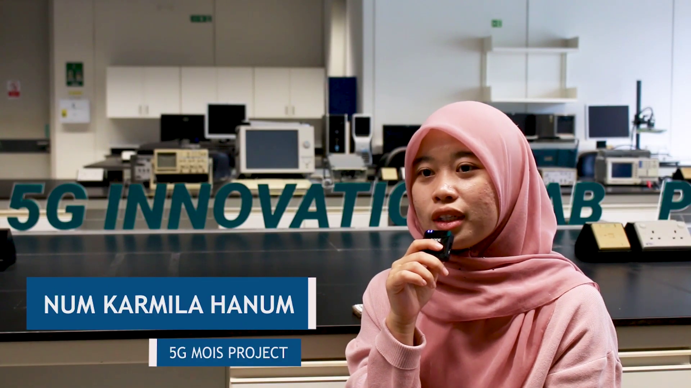
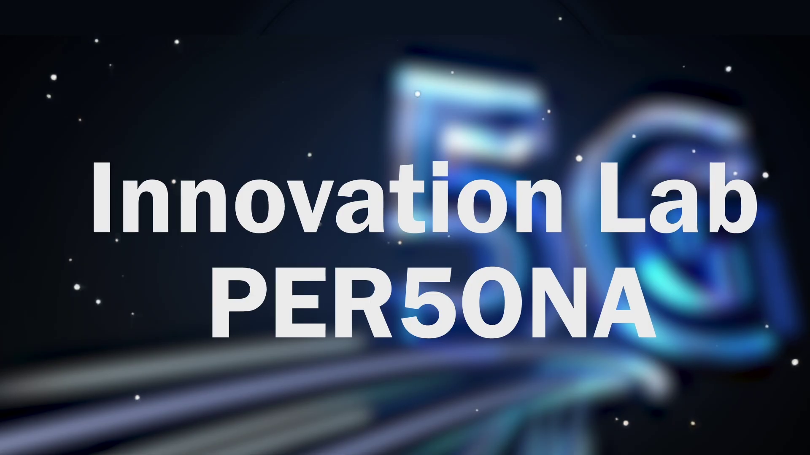

5G Innovation Lab - UTP
À propos du projet
Cette vidéo promotionnelle a été réalisée lors de mon stage de quatre mois en Malaisie, à l’Universiti Teknologi Petronas (UTP). Elle met en avant PERSONNA, un projet mené par l’un des laboratoires de l’université, qui vise à développer un protocole de sécurité à distance s’appuyant sur une antenne 5G.

Réalisation & Captation
Le tournage s’est organisé en deux volets. D'abord les interviews des membres du laboratoire forment le fil conducteur de la vidéo, puis ces interviews sont complétées par des plans d’illustration, filmés dans le laboratoire et dans les salles de test, qui montrent concrètement les équipements et les expérimentations.

Montage
Le montage a été réalisé à deux, en commençant par les interviews. Nous les avons montées ensemble pour construire le storytelling de la vidéo, avec l’objectif que le projet PERSONNA se comprenne à travers la parole de ses créateurs. Puis nous y avons intégré les plans d’illustration tournés dans le laboratoire et les salles de test, pour appuyer les propos des intervenants.

Post-production
J’ai assuré seule toute la post-production de la vidéo, en créant l’habillage graphique sur After Effects : bandeaux de présentation pour les intervenants, animations de titres pour structurer la vidéo, et animation d’introduction.